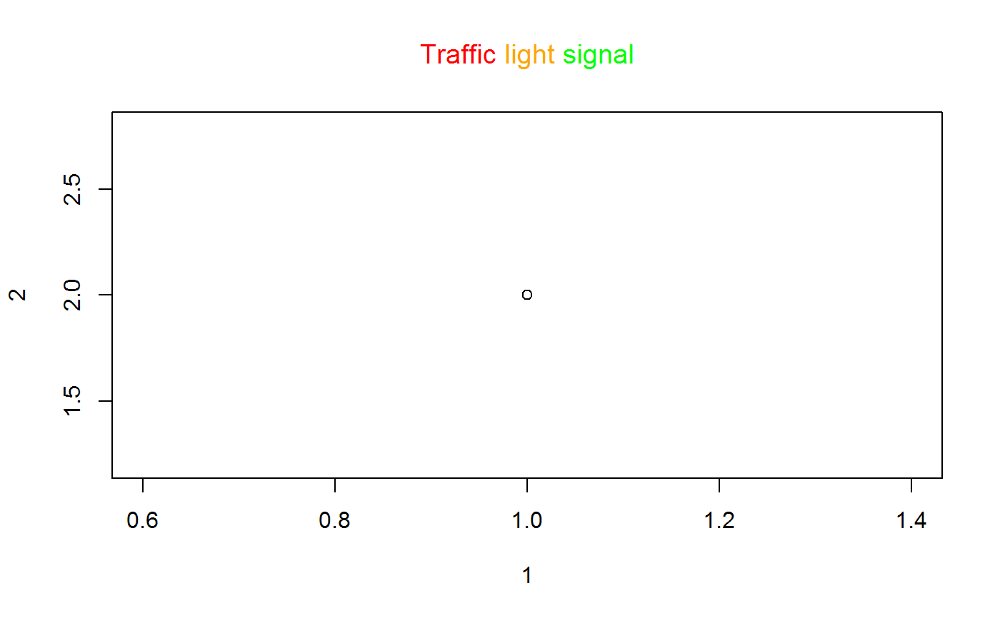

Make multiple colored base plot title.
multi_title(...) multi_color_title(color_vec, text_vec, sep = ", ") multi_color_multi_line_title(color_vec, text_vec, sep = "\n\n")
| ... | Color and text interwoven in order. See example. Note some spaces need to be placed around text. |
|---|---|
| color_vec | Vector of colors. Should have same length with |
| text_vec | Vector of text segments. Will have the cooresponding color in
|
| sep | Separator to be placed among the text segments |
multi_title: The original function taken from
mailing list by Barry Rowlingson.
The only change is the NULL return value was made invisible.
multi_color_title: Instead of taking interwoven color and text input,
color vector and text vector are used.
multi_color_multi_line_title: Place each text segment in a new line.
multi_title(color="red", "Traffic", color="orange", " light ", color="green", "signal")